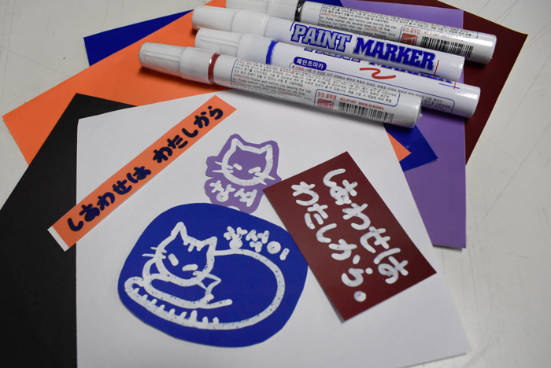
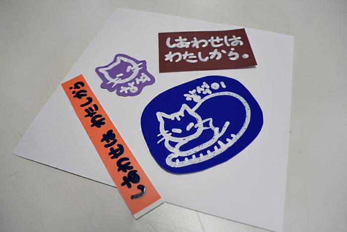
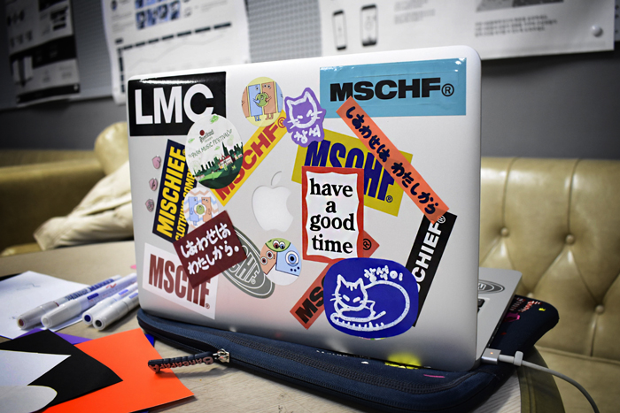
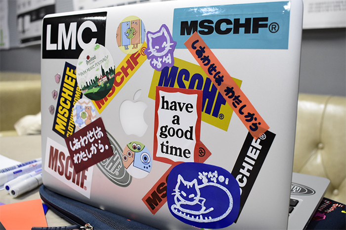

흰색 페인트 마카1개,검정 페인트 마카1개,스티커 6종
"총 3,500원 (+배송비 별도)"
흰색 (15cmX15cm)
검정 (15cmX15cm)
주황 (+200원) (15cmX15cm)
파랑 (+200원)(15cmX15cm)
연보라 (+200원)(15cmX15cm)
와인 (+200원)(15cmX15cm)
흰색 페인트 마카
검정 페인트 마카
빨강 페인트 마카 (+200원)
파랑 페인트 마카 (+200원)
1번
원하는 색의 스티커를 고른다.
2번
구성 된 페인트 마카로 그림을 그린다.
3번
알맞은 크기로 오려서 붙인다.
끝!!!
   
다들 비슷한 생김새의 스티커들은 많이 갖고 있지만 나만의 스티커는 별로 없음
DIY의 특성상 세상에 하나밖에 없기때문에 소장가치가 있음
노트북 스티커가 유행이지만 그 이외에 다른 용도로도 쓰일 수 있음
ex) 텀블러, 핸드폰 케이스, 공책 등